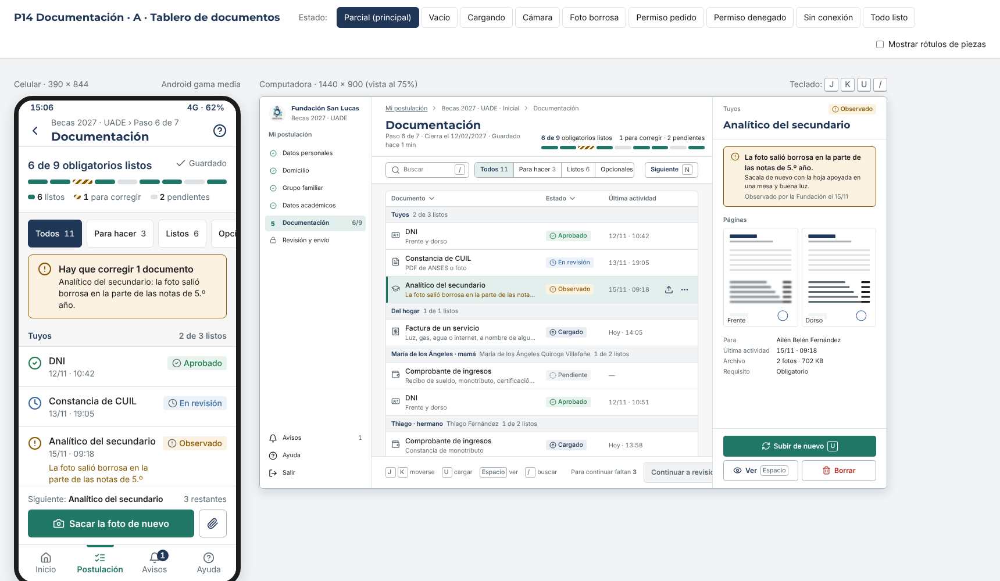
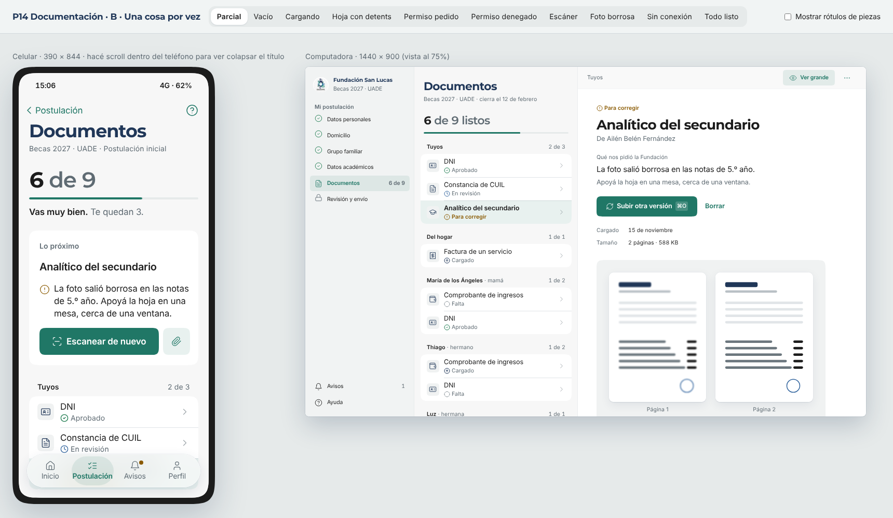
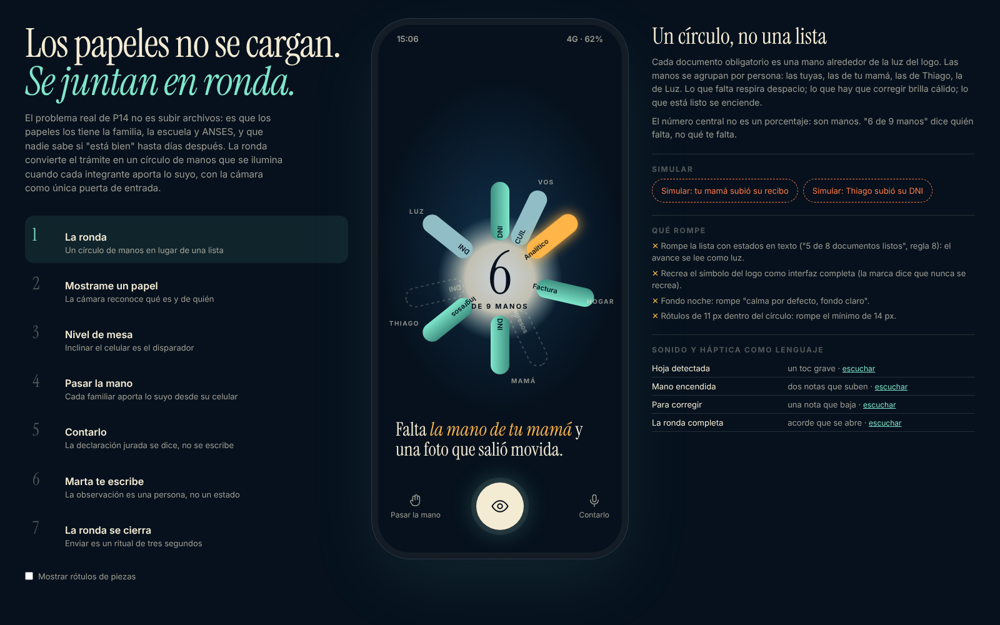

A · Clásica de productividad
Tablero de documentos
Una lista de control agrupada por persona, con filtros, tabla e inspector en la computadora y una sola acción fija abajo en el celular: siempre sabés qué sigue.

B · Premium estilo Apple
Una cosa por vez
Un número grande, una sola tarjeta con lo próximo y un escáner que endereza solo. Hojas con detents, materiales solo en la navegación y mucho aire.

C · Disruptiva
La ronda
Los papeles no se cargan: se juntan en ronda. Un círculo de manos que se enciende, la cámara que reconoce cualquier papel, la familia que aporta desde su celular y la voz en lugar de la declaración jurada.